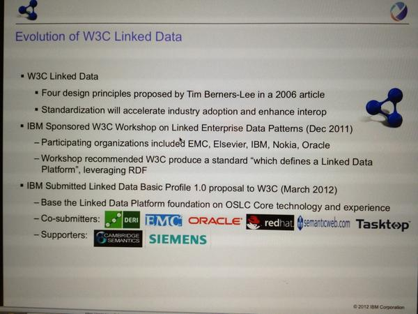

December 2012
Food for Thought > MT @SteveLohr: Sure, Big Data Is Great. But So Is Intuition nyti.ms/YYhHRL #bigdata
XML4PHARMA's (Jozef Aerts') on #CDISC SDTM Suppl. Qualifiers and the use of machine-readable metadata in ODM cdiscguru.blogspot.se/2012/12/sdtm-s…
New blog post: My MOOCs Spring 2013 kerfors.blogspot.se/2012/12/my-moo… #MOOC (Massive Open Online Courses) #Coursera
#REST "the gate fee has to be paid, and everything has to be identified" @GrahameGrieve healthintersections.com.au/?p=1296 via @motorcycle_guy
#NoteToSelf for 2013: The Magic of Doing One Thing at a Time - @HarvardBiz blogs.hbr.org/schwartz/2012/…
Trend #1 2013: “make data not just open but liquid, flowing across sectors previously stuck in silos” @digiphile radar.oreilly.com/2012/12/14-tre…
I have enrolled to @lysander07's #SemanticWeb Technologies course starting in Feb. 2013 at OpenHPI openhpi.de/course/semanti…
Interesting postings re. #wikidata representing values meta.wikimedia.org/w iki/Wikidata/Development/ e.g @tfmorris' lists.wikimedia.org/pipermail/wiki…
Just found #Stats2RDF aksw.org/Projects/Stats… lead by @amrapaliz Stats data using the #RDF Data Cube Vocabulary #SemanticWeb
.@PHUSETwitta Checkout #Stats2RDF
Representing multi-dim. statistical data as RDF using RDF Data Cube Vocab. aksw.org/Projects/Stats…
Representing multi-dim. statistical data as RDF using RDF Data Cube Vocab. aksw.org/Projects/Stats…
MT @SemanticWeb: #SemanticWeb Job: @amazon bit.ly/V6W26X - 5 years of experience: #RDF / #SPARQL / #OWL / Ontologies
MT @bengoldacre: The #EMA have been forced by EU Ombudsman to stop hiding #ctdata. Now: what about the #FDA? bit.ly/12pi7k3
@PHUSETwitta "Getting started with AnIML" animl.sourceforge.net/files/pdf/2012… << ping @AnIML Other intros?
#CDISC Protocol Outline Wizard powered by @Medidata lnkd.in/f_mbsG via @gemzik < Nice. How about RDF as alt to PDF/CSV later on?
Cathing up on AnIML (Analytical Info. Markup Language) animl.sourceforge.net as it's on @PHUSETwitta's poll lnkd.in/UERp5H
Reading "Models for Forms" paper: dsmforum.org/events/DSM11/P…, presemtation dsmforum.org/events/DSM11/S… #ISO11179 #metadata
FDA: What format should be used for data exchange? Which do you think should be the winner? lnkd.in/UERp5H < My vote: RDF
"Absolute uniformity is surely an unrealistic dream." @charlescrichton et al cs.ox.ac.uk/publications/p… #clinicaltrial
Reading "The CancerGrid Experience: Metadata−Based Model−Driven Engineering for Clinical Trials" cs.ox.ac.uk/publications/p… #ISO11179
I have added a link to the EU survey "10 Rules for Persistent URIs" to my URI Design page kerfors.blogspot.se/p/uri-design.h… #LinkedData
I'm following a nice prez by @sspeiche, IBM on #LinkedData & system dev. open-services.net/resources/pres… (recorded)

Linked Clinical Data Cube, interesting combination of #CDISC ODM & RDF Data Cube ict.csiro.au/staff/laurent.… by @laurentlefort #swat4ls
@PharmAware @veitchemma Would be great to have #GBD2010 as #LinkedData #OpenData, as done for WHO's GHO semantic-web-journal.net/sites/default/…
Creating visualizations using Linked Data (using Visualbox) slideshare.net/alangrafu/crea… via @danbri #LinkedData
Agile Development of the #rnews Standard bit.ly/UYf4fG @SemanticWeb <- Interesting also for other standards e.g. #cdisc ?
Thinking of how the #ISO11179 ontology github.com/sinaci/semanti… could be combined w. the Info Artifact Ontology code.google.com/p/information-…
Cool! Reminds me of how much HyperCard fascinated me > #InfiniteCanvas App - Today's HyperCard: youtu.be/RlANVgO8l6I via @kidehen
@danbri Checkout a OWL representation of #ISO11179 for metadata registries github.com/sinaci/semanti… see also srdc.com.tr/projects/salus…
Great piece by @aaranged on Google #DataHighlighter: Markup-Free Structured Data for Google seoskeptic.com/google-data-hi…
Alt. to "cave of PDFs" as joked about in the EMA workshop #ctdata youtu.be/upinaTryTho > open data formats for machines w3.org/2012/Talks/110…
Excellent point by @GinnyBarbour about metadata and persistent identifiers for #ctdata 54 mins into EMA video youtu.be/upinaTryTho
Watching the videos from EMA workshop on Clinical Trial Data and Transparency youtube.com/watch?v=upinaT… #ctdata
Data diving to map the iceberg of #ctdata >> Basic data profiling ("bulk-proc-content") and Semantic indexing the-scientist.com/?articles.view…
Yes! My son @erikforsberg1 just reported that #SemanticWeb & OWL was mentioned in his database course, computer science, @got_university
Add a link to the new catalog and intro in Swedish: Linked data in Sweden to my #LinkedData resource page: kerfors.blogspot.se/p/linked-data-…
On my to-read-list >> MT @ahier: Reading: Trust and Security on Semantic HIM [pdf] bit.ly/11LbFnh #SemanticWeb
MT @peterkz_swe: Linked data in Sweden - catalog and intro in swedish: linked-data.se #lod #SemanticWeb #LinkedData #dataviz
+10 RT @peterkz_swe: Open linked data from the Nobel prize foundation: data.nobelprize.org #LankadeData #LinkedData
+1 RT @Prototypo: Manning adds #LinkedData to the site for the Linked Data book! See the RDF icon at manning.com/dwood/
Have now broken my principle to only have family, friends, outdoor stuff in my FB feed: Liked facebook.com/groups/sswig/ #oppnadata
+1 “The thing about #semanticweb and #linkeddata is that it allows for both precision AND nuance.” @ljndawson via @jillmwo
Studying updated #ISO11179 #metadata #MDR jtc1sc32.org/doc/N2251-2300… to understand the OWL version of it github.com/sinaci/semanti…
"Even in an XML-centric world, URIs are surely the most appropriate identifiers" @philarcher1 crossover-project.eu/News/tabid/106… #LinkedData
MT @ericaxel: @kerfors And wouldn't it be great to see a global ODI!? ("GODI" perhaps.) #ODILaunch #opendata